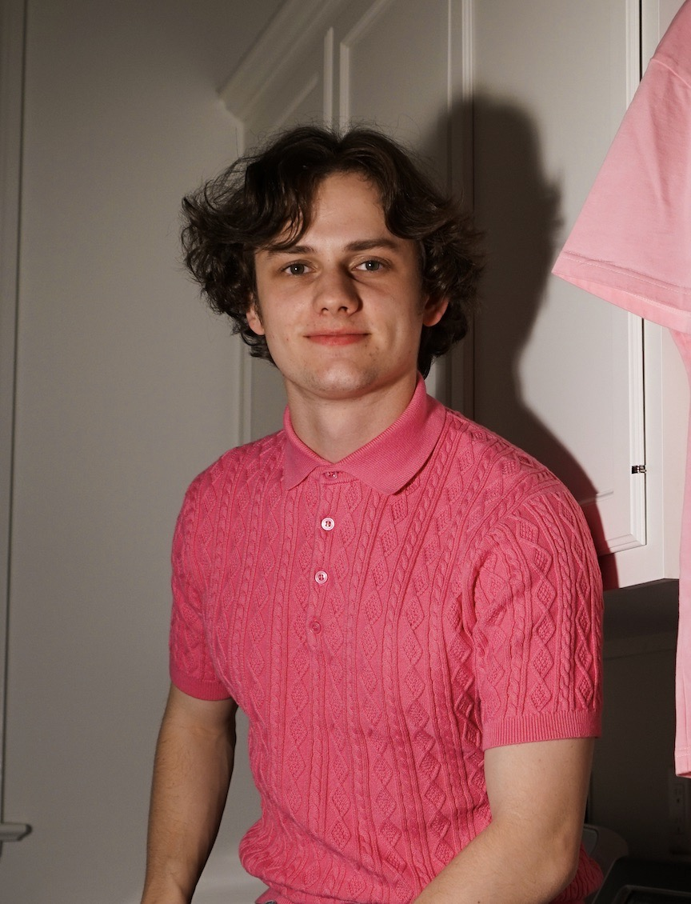

<div class="textcontainer">
<h3>About Me</h3>
<p class="margin"> </p>
<div class="center-row">

<p id="aboutme">
What up! I'm Finn. I study psychology and neuroscience. As a freshman in high school, I built a rocket-powered bottle cap car for a Spanish project about recycling. The art of fabrication is in my blood, and so are many microplastics.
</p>
</div>
<p></p>
<html lang="en">
<head>
<meta charset="UTF-8">
<meta name="viewport" content="width=device-width, initial-scale=1.0">
<title>Your Page Title</title>
</head>
<body>
<h1>Final Project Proposal</h1>
<p>For my final project, I plan to make the "Spend the Night Light". Every year, dozens of university students complain that there is no high-tech evolution of the sock on the door. Whether you're on an important Zoom call or engaging in a spirited game of horizontal tango, your privacy is important.
Our solution is simple; we've created an ergonomic switch that attaches to your bed, side table, or desk. Once flipped, our app sends a notification to a group of your choosing that you are BUSY. The switch is also wirelessly connected to an LED reciever which can be placed outside your room. Depending on switch position, this light will display one of two colors, signifying "don't come in" or "enter cautiously".</p>
</body>
</html>
<p class="margin"> </p>
<div class="flexrow">
<img src="./hbc.jpg" alt="photo of a dancer jumping on a stage, lit with various colors of light." width=35%>
</div>
<p class="caption">This is a photo of a ballet show I lit in the spring of 2022.</p>
<p class="margin"></p>
See [Week 1](./01_intro/index.html) to check out my ideas for my final project!
</div>